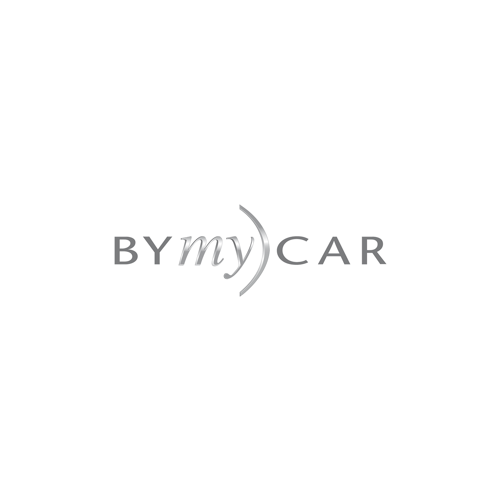
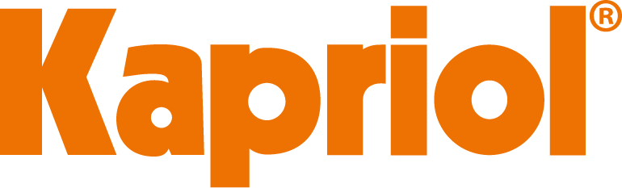
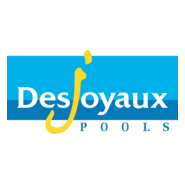
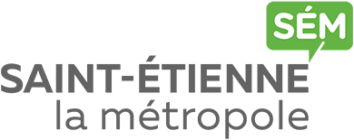

Hummel
Fondée en 1923, hummel est l’une des plus anciennes marques de vêtements de sport d’équipe au monde, avec un incroyable héritage footballistique.
Nos emblématiques chevrons ont toujours représenté notre façon d'aimer faire les choses un peu différemment.
Nous aimons le sport et nous sommes fiers de l’utiliser comme un moyen de changer le monde positivement.
Cette saison marque le début de notre collaboration avec l’ASSE - Site officiel et nous sommes enthousiaste à accompagner le club dans leur nouveau challenge !
Site internet
Casino
Casino est un des acteurs majeurs de la grande distribution française et international. L’histoire de l’ASSE - Site officiel est intimement liée à celle de Casino.
Ces liens débutent en 1919 avec la création de la section football de l’AS Casino qui deviendra l’AS Saint-Etienne en 1933.
Depuis presque 90 années, les deux entités partagent les mêmes valeurs de la région stéphanoise à travers un partenariat historique.
Site internet
Loire Département
Ayant toujours considéré l'AS Saint-Etienne comme un vecteur de communication majeur de son territoire,
LOIRE DEPARTEMENT est le partenaire le plus fidèle sur la tenue des verts.
Site internet
ByMyCAR
ByMyCAR est un groupe français de distribution automobile.
Fort des valeurs humaines qui ont constitué le socle des plus grandes performances de l'ASSE - Site officiel, le Groupe BYmyCAR est ainsi devenu une marque nationale de référence.
Il poursuit depuis 2019, via l’association avec le club, un double objectif : conforter le développement de son activité en France et accélérer la progression de ses ventes sur son site de vente en ligne de véhicules bymycar.fr.
Site internet

Kelyps Intérim
Kelyps INTERIM a été créé en 2018 par deux ligériens Alexandra BONASSIEUX et Antoine BARTHELEMY.
Passionnés de sports, il était tout naturel de soutenir l’AS Saint Etienne dans ce nouveau challenge et ce pour les quatre prochaines saisons.
« Nous sommes très fiers avec nos équipes de pouvoir afficher haut et fort nos valeurs et nos couleurs aux côtés de l’ASSE - Site officiel. »
Kelyps Intérim est spécialiste des secteurs de l’Industrie, du Tertiaire et du BTP et la particularité d’être l’enseigne du travail temporaire avec le plus grand nombre de points d’accueil dans la Loire.
La marque est en cours de développement sur le territoire national et 2023 marquera l’année de la construction de son siège social sur St Priest en Jarez.
Site internet
Siléane
Siléane est une entreprise spécialisée en robotique industrielle, vision et intelligence artificielle.
Elle conçoit et fabrique des machines robotisées intelligentes capables de s'adapter à des environnements de production complexes et aléatoires dans tous les secteurs industriels.
Reconnue pour son expertise dans le développement de solutions automatisées innovantes, Siléane possède son siège à Saint-Étienne.
Elle compte désormais 7 implantations en France et une équipe de 200 collaborateurs composées de 80% d’ingénieux ingénieurs.
Grâce à une forte culture de l'innovation et une approche sur mesure, Siléane accompagne ses clients dans l'optimisation de leurs processus industriels, contribuant ainsi à leur performance, leur attractivité et leur compétitivité.
Site internet
Kapriol
Fondée en 1927, Kapriol a su allier expérience et innovation pour devenir une entreprise à 360° dans le monde du bâtiment, en proposant des solutions durables et de qualité. L’entreprise italienne propose aujourd’hui plus de 5000 produits répartis dans quatre catégories distinctes : Hand Tools, Safety, Power Tools, et Work Wear.
Comme l’ASSE - Site officiel, Kapriol donne une importance particulière aux valeurs humaines, à la détermination, et à la performance.
C’est une nouvelle opportunité et une alliance évidente pour ces deux équipes ambitieuses.
Site internet

Piscines Desjoyaux
La société Piscines Desjoyaux est premier réseau exclusif mondial de construction de piscines enterrées. À l'instar de l'AS Saint-Etienne, les Piscines Desjoyaux procurent à leurs clients des moments de bonheurs simples et de bons moments partagés.
Le partenariat est en place depuis 16 ans et la marque présente sur le short des verts depuis 7 ans.
Site internet

AÉSIO mutuelle
Spécialisé dans la protection sociale de personnes, AÉSIO mutuelle est un leader en assurance de personnes.
Ensemble depuis 2015, l’AS Saint-Etienne et AÉSIO mutuelle donnent plus d’impact à leurs actions avec le rayonnement de leurs marques respectives et le développement d’opérations auprès de différents acteurs de la santé,
du monde économique et du milieu social ou solidaire.
Avec l’association ASSE - Site officiel Cœur-Vert, les deux partenaires continuent de renforcer leur engagement solidaire au travers de diverses actions.
Site internet
WF Invest
WF Invest est un groupe régional fondé par deux professionnels de la restauration.
Le groupe détient plusieurs établissements dans l'hôtellerie, la restauration et le textile.
WF Invest apporte toute son expertise via sa filiale événementielle WF Events, société spécialisée dans la gestion d'enceintes sportives.
L’entreprise accompagne notamment le club dans son offre réceptive, tant au niveau du grand public que de sa clientèle VIP.
Cette « coopération régionale » permet de proposer sur l‘ensemble des espaces VIP et grand public une offre émanant de traiteurs et de producteurs locaux reconnus.
Site internet
Crédit Agricole Loire Haute-Loire
Partenaire historique de l'ASSE - Site officiel et du football amateur, le Crédit Agricole Loire Haute-Loire est une banque coopérative et mutualiste qui soutient depuis toujours ceux qui font vivre le sport et qui incarnent le mieux ses valeurs.
Avec 146 agences de proximité, elle mobilise l’énergie de 1 400 collaborateurs et de 820 Administrateurs au service de 520 000 clients. Banque officielle des Verts et mécène de la Fondation ASSE - Site officiel Cœur-Vert,
la Caisse Régionale a également développé une carte bancaire aux couleurs de l'AS Saint-Etienne offrant de nombreux avantages aux supporters.
Site internet
Saint-Étienne Métropole
Saint-Étienne Métropole gère, pour ses usagers, différentes missions de service public comme la gestion des déchets, les transports scolaires, l’alimentation en eau potable ou encore la voirie.
L’AS Saint-Etienne et Saint-Étienne Métropole collaborent sur l'attractivité du territoire, notamment par le biais du stade Geoffroy Guichard les jours de match et hors jours de match,
à travers une collaboration étroite avec l’office du tourisme.
Site internet

900.care
900.care prend soin de vous et de la planète en proposant des produits d’hygiène-beauté
et d’entretien de la maison, écologiques, rechargeables, et conçus avec des formules saines et naturelles.
Site internet
Radio Scoop
Radio local et officielle des verts.
Site internet